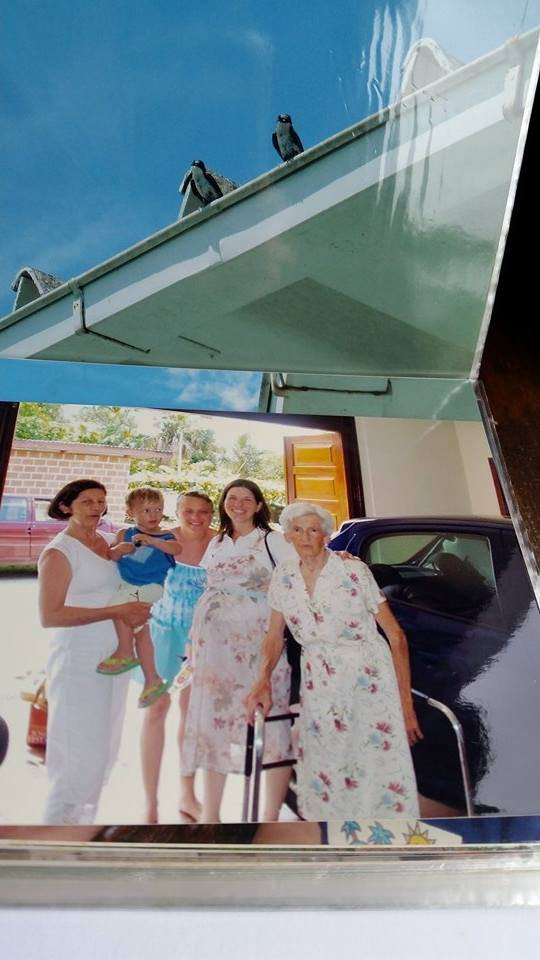
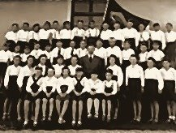
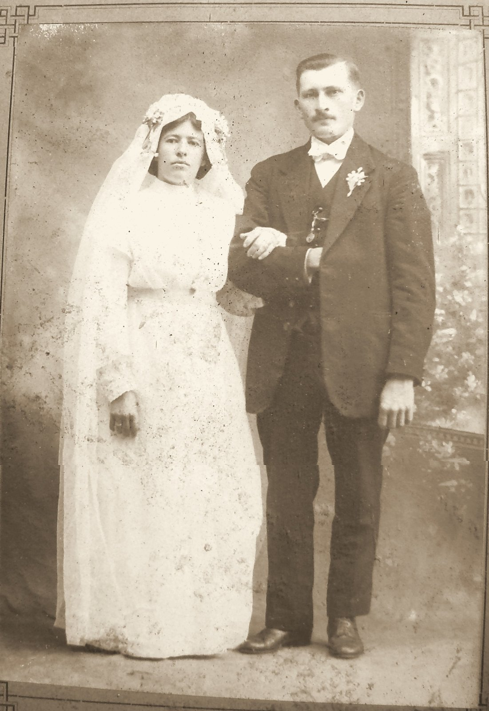

Parte IV · Os Horizontes de Bárbara
Capítulo 11 — Na Garagem da Oma Rosita, nos Retratos do Vô Erno e no Legado do Dr. Carlos Heinz Funke
Ar úmido subindo o Vale do Taquari. Correntes contínuas entre Joinville, Estrela e Arroio do Meio. Microclimas de família.
Há casas onde o Natal começa pelo cheiro das bolachas. Foi numa delas que a outra metade desta história me esperava.
26,3° S · 48,8° O, Joinville, SC
Quatro gerações numa garagem
Na fotografia que abre este capítulo há cinco pessoas, e a legenda da família só dá nome a quatro. A imagem é a fotografia de uma fotografia. Alguém fotografou com o celular uma página de álbum e, sem querer, deixou na parte de cima da imagem um pedaço da página anterior: um beiral branco, um céu muito azul e dois pássaros escuros pousados na calha. Embaixo, protegida pelo plástico do álbum, está a cena que importa. É uma garagem em Joinville, no início de 2005. Atrás, uma porta de madeira e um carro escuro, e lá fora o verde de um quintal.
Segundo a legenda que a família escreveu para ela, estão ali quatro gerações. A bisavó Oma Rosita Lohmann Hoeveler, de cabelos brancos e vestido florido, apoiada num andador de alumínio. A neta dela, Bárbara, de vestido estampado, com a barriga redonda de quem espera o segundo filho. Esse filho é você, Lucas, que nasceria em 10 de março daquele ano. E a avó, a Dra. Ilusca Leocádia Hoeveler Funke, com um menino loiro de camiseta azul no colo: você, Matheus, que tinha nascido em 20 de junho de 2002. Por uma coincidência que nunca deixa de me divertir, você nasceu no mesmo dia do meu aniversário. Recebi um presente com trinta e sete anos de atraso.

Gosto dessa imagem pelo que ela mostra e pelo que ela esconde. Mostra uma linha de mulheres: Rosita, que nasceu em 1918 no Vale do Taquari, no Rio Grande do Sul; Ilusca, que cresceu entre Estrela e Nova Petrópolis; Bárbara, que nasceu em Joinville em 27 de julho de 1972. Esconde quase tudo o que veio antes delas: os veleiros de 1846, uma fazenda de vinte e quatro colônias, uma mulher morta vinte e seis dias depois de um parto, uma casa nova em Palmas, diante do Salto do Taquari. Nada disso aparece na fotografia, mas tudo isso estava ali dentro, de pé numa garagem, num dia de verão. A quinta pessoa, uma moça de vestido azul, a legenda não identifica, e eu a deixo assim.
Nos capítulos anteriores segui as correntes que desembocam em mim: os Haas e os Meier da Baviera, os Doerner, os Preiss, os Michels e os Arns. Agora preciso fazer o que um meteorologista faz quando percebe que a sua retrotrajetória só explicou metade da umidade de uma tempestade: procurar a outra fonte. Matheus e Lucas não são só Haas. São também Funke, Hoeveler, Lohmann, Endres, Schnack e Wingert. Essa metade eu não posso contar sozinho.
Por isso, nesta Parte IV, Bárbara fala também. Os trechos em itálico, introduzidos sempre com o nome dela, são dela, na primeira pessoa. O resto continua sendo a minha voz, a de quem chegou a essa família de fora, como genro, e foi aprendendo os nomes aos poucos.
A outra metade
Joinville tem um clima que eu, como meteorologista, sempre achei teatral. A cidade fica espremida entre a Baía da Babitonga, a leste, e a muralha da Serra do Mar, a oeste, ali chamada de Serra Dona Francisca. O ar úmido que vem do oceano é empurrado contra a encosta, sobe, esfria e despeja a umidade em forma de chuva. Por isso chove tanto em Joinville. É uma das cidades mais chuvosas do Sul do Brasil, com dias inteiros de garoa e tardes de verão em que a chuva cai pesada sem nenhum aviso. Os colonos que chegaram em 1851 para fundar a Colônia Dona Francisca aprenderam isso logo. Os descendentes deles guardam até hoje o hábito de ter um guarda-chuva perto da porta.
Foi nessa cidade, entre o mar e a serra, que os Funke se estabeleceram, e foi para ela que vieram, mais tarde, os Hoeveler do Rio Grande do Sul. O pai de Bárbara, o médico Carlos Heinz Funke, nasceu ali em 10 de agosto de 1939. A mãe, Ilusca, chegou do Rio Grande. Não sei, e não vou inventar, onde e como os dois se conheceram. Ele se formou em Medicina no Rio Grande do Sul, e a vida acadêmica em Porto Alegre ou nos arredores é o cenário mais provável, mas é só uma hipótese. Sei que se casaram, que tiveram quatro filhos (Bárbara, Katherine, Alessandra e Paulo Jacques) e que Oma Rosita passou os últimos anos perto deles, em Joinville.
Os Funke trazem uma surpresa que eu só vi quando juntei as duas árvores. Nos registros do FamilySearch, Paulo Funke e Hulda, os bisavós de Bárbara, nasceram em Glauchau, na Saxônia, em 1881 e 1889, e o filho deles, Oscar Martin, avô de Bárbara, nasceu no distrito de Glauchau em 1º de dezembro de 1910. Glauchau fica a poucas dezenas de quilômetros de Chemnitz. E Chemnitz é a cidade onde a minha família lembra que o Fata e a Mota moravam antes de partir, em 1913. Por volta de 1910, portanto, é possível que os bisavós do meu lado e os de Bárbara vivessem na mesma região da Saxônia, sem saber uns dos outros, e que todos tenham acabado em Santa Catarina. Nenhum papel diz que se cruzaram. E há mais um galho longe dali: Dora Marta, a Oma Dora, era filha de Jacques Aenishaenslin, nascido na Suíça, numa família de Ormalingen, perto de Basileia.
Quando casei com Bárbara, juntei à minha árvore um galho que eu não conhecia. Do meu lado, católicos da Baviera e do Mosela, com uma dispensa de religião mista perdida no Capivari, como vocês viram no capítulo anterior. Do lado dela, luteranos de Braunschweig, de Schleswig-Holstein, da tradição evangélica do Vale do Taquari e da Serra Gaúcha. Do meu lado, gente que construía igrejas com as mãos. Do lado dela, gente que ensinava e curava. Não quero transformar isso em fórmula, porque as famílias são mais misturadas do que qualquer resumo, mas o contraste existe e eu o senti desde os primeiros almoços de domingo em Joinville.
Aqui passo a palavra a Bárbara.
Na minha lembrança, a Oma Rosita faz parte da casa de Joinville tanto quanto a cozinha. Ela vinha do Rio Grande, de uma família de doze irmãos, e eu demorei muito para entender o que isso queria dizer. Quando ela falava dos irmãos, os nomes pareciam de personagens: Urbano, Armando, Sunta, Arlindo. Por muito tempo, para mim, foram mais nomes do que rostos: gente que vivia longe, num vale de onde ela tinha saído havia muito tempo.
O nome que me liga a ela mais diretamente nem é o meu, é o da minha mãe. Ilusca Leocádia. O Leocádia veio da bisavó, Miguelina Leocádia Endres, a mãe da Oma Rosita. Na nossa família os nomes passam assim, por dentro, no segundo nome, como uma coisa que não se anuncia mas também não se perde.
O médico de Pirabeiraba
O Dr. Carlos Heinz Funke, que aparece nos documentos ora como Heinz, ora como Heins, morreu em Joinville em 1989, por volta dos cinquenta anos. Bárbara era adolescente. Eu não o conheci. Sei dele o que a família conta e o que a cidade guardou, e a cidade guardou bastante.
Em Pirabeiraba, o distrito rural ao norte de Joinville, ao pé da serra, duas instituições públicas levam o nome dele. Uma é a Unidade Básica de Saúde da Família Dr. Carlos Heinz Funke. A outra é a Escola Agrícola Municipal Carlos Heins Funke, criada em 1989, o ano da morte dele, e autorizada a funcionar em 15 de fevereiro de 1990.
Ficha do Arquivo: Escola Agrícola Municipal Carlos Heins Funke, Pirabeiraba, Joinville (SC). Criada em 1989 pelo Decreto nº 6168/89 e pelo Parecer 452/89; funcionamento autorizado em 15/02/1990; APP reconhecida de utilidade pública pela Lei nº 3.968, de 05/07/1999. Oferece o ensino fundamental (6º ao 9º ano) com pré-qualificação em agropecuária, em período integral, para alunos de todo o município. Fonte: página institucional da APP da escola (consulta em 2026).
Gosto de imaginar o que esse nome numa escola agrícola diria a um homem que passou a vida entre consultórios e hospitais. A página da escola explica que o objetivo é preparar o jovem para atuar na propriedade rural da família, “despertando o interesse pela permanência no campo”. É quase uma resposta, cem anos depois, ao drama de todas as famílias deste livro, que tinham filhos demais para a terra que havia e os viam partir. Não sei se o Dr. Carlos Heinz pensou nisso alguma vez. Sei que os nomes que uma cidade dá às suas escolas e postos de saúde são uma forma de dizer quem cuidou dela.
Da família dele tenho duas fotografias, e as duas pedem cuidado na leitura.
A primeira é um retrato de estúdio em sépia, manchado pelo tempo, que a família guarda como “o bisavô e a família de Oma Dora”. Oma Dora é a mãe do Dr. Carlos Heinz, a avó paterna de Bárbara. No centro, sentados, um homem de bigode, terno claro e colete, e uma mulher de vestido branco de gola larga, com as mãos no colo. Em volta deles, nove jovens: rapazes de gravata, moças de cabelo curto à moda do fim dos anos 1920, uma menina de franja reta, um menino de colarinho aberto. Se a minha contagem está certa, são nove filhos. A identificação de cada rosto, inclusive o de Dora, ainda está por confirmar com quem a conhece, e eu não vou arriscar.

A segunda foi tirada cinquenta e poucos anos depois, num salão de festas com lustres de cristal e cortinas vermelhas. Na toalha de uma mesa enfeitada de margaridas brancas, alguém escreveu à caneta a data: 22/01/83. Oito pessoas posam lado a lado e riem: seis mulheres de vestidos estampados e dois homens de terno, um deles de cravo branco na lapela. A família registra a imagem como “Oma Dora com seus sete irmãos”. Oito, portanto, é a soma certa, Dora e mais sete. Se no retrato antigo havia nove filhos, um dos irmãos não chegou à festa de 1983, ou a minha contagem do retrato antigo está errada. Prefiro deixar a pergunta para Bárbara e as irmãs dela a forçar uma resposta.

Olhando as duas imagens juntas, vejo uma coisa que a genealogia raramente consegue mostrar: o tempo agindo sobre as mesmas pessoas. Os jovens sérios do estúdio, que olham para a câmera com a solenidade de quem não sabe se haverá outra fotografia, viram os velhos risonhos do salão, que já não têm medo da câmera e se abraçam para caber no quadro. Entre uma imagem e outra cabem uma guerra mundial, a Campanha de Nacionalização, que proibiu o alemão nas escolas e nas ruas, e a transformação de Joinville de cidade colonial em cidade industrial. Cabe também a vida inteira do Dr. Carlos Heinz, que em janeiro de 1983 tinha quarenta e três anos e mais seis pela frente.
Pirabeiraba, onde estão a escola e o posto que levam o nome dele, é um bom lugar para entender Joinville. O distrito fica ao norte da cidade, onde a planície encontra a serra. Por ali passa a velha Estrada Dona Francisca, aberta no século XIX para ligar a colônia do litoral ao planalto de São Bento, uma das obras de que os colonos mais se orgulhavam. É uma terra de sítios, de bananais e arrozais, de casas de colonos com jardins cuidados, e também de rios que descem da serra com pressa e transbordam com facilidade depois de uma chuva forte. Um médico que trabalhasse ali atendia agricultores, operários que desciam todos os dias para as fábricas da cidade, crianças com verminose, velhos com pressão alta. Não tenho a lista dos lugares onde o Dr. Carlos Heinz atendeu, e não vou inventá-la. Mas a escolha do nome dele para duas instituições daquele distrito diz, com bastante clareza, que foi ali que a cidade o reconheceu.
Sobre o pai, Bárbara escreve pouco, e eu respeito a medida.
É estranho ver o nome do próprio pai numa placa. A gente cresce chamando de pai uma pessoa que, para os outros, era o doutor. Depois que ele morreu (eu era adolescente), o nome dele foi para uma escola e para um posto de saúde, e deixou de ser só nosso. Hoje acho que isso é uma forma de herança também: saber que o trabalho de alguém continuou servindo depois que ele se foi, em lugares onde nenhum de nós estava.
O professor de Nova Petrópolis
Do lado da mãe de Bárbara, a fotografia mais antiga que tenho é de uma escola. Também ela é uma reprodução: uma foto pequena, em preto e branco, posta sobre um tecido cor-de-rosa e fotografada de cima. Nela, umas quatro dezenas de alunos estão alinhados em fileiras diante de um prédio, os da frente agachados, os de trás de pé, quase todos de camisa ou blusa branca e as meninas de saia escura. No centro, de terno escuro, um homem adulto. Atrás, o que parece ser uma bandeira. É o Vô Erno Hoeveler, bisavô de vocês, professor.

Erno Hoeveler foi professor em escolas da comunidade evangélica em Estrela e em Nova Petrópolis, no Rio Grande do Sul. Casou com Rosita Érica Lohmann, a filha de Francisco Jacob Lohmann e Miguelina Endres, e teve com ela quatro filhos, entre eles Ilusca e Walter. Nas colônias alemãs do Sul, o professor da escola comunitária era uma figura central, muitas vezes o único homem letrado da localidade além do pastor. Ensinava a ler em alemão e em português, ensinava aritmética e o catecismo, e com frequência regia o coral e ajudava no culto. Não era um ofício que enriquecesse ninguém. A própria Ilusca disse isso com toda a simplicidade numa reportagem de jornal sobre os Natais de antigamente em Joinville: o pai era professor e ganhava pouco, e por isso muitos presentes de Natal eram consertados e reaproveitados, e às vezes o presente eram maçãs e biscoitos.
Na mesma reportagem, ela conta dois presentes que marcaram a infância. Uma boneca, que guarda até hoje, já com os olhos afundados pelo tempo, e um violino usado que o pai comprou numa casa de penhores em Porto Alegre. Leio essa frase e vejo o Vô Erno, que eu também não conheci, entrando numa casa de penhores da capital com o salário curto de professor de colônia, escolhendo entre objetos que outras famílias tinham deixado por necessidade e saindo com um violino para a filha. Não sei o ano nem a loja, e não preciso saber. Quando Ilusca casou, contou ela, deu o violino a um sobrinho.
Ilusca, a filha do professor que ganhava pouco, tornou-se advogada. Para uma moça nascida por volta de 1943 numa família de colônia, filha de um professor de escola comunitária, isso foi um salto de geração tão grande quanto o de Johann Haas ao trocar a Baviera por Rio do Ouro. Em duas gerações, a família que vivia do salário curto de um mestre-escola passou a ter, numa mesma casa de Joinville, uma advogada e um médico. Não romantizo esse salto. Imagino que ele tenha custado anos de estudo, distância de casa e alguma solidão, como custou a todos os filhos de colonos que foram os primeiros da família a entrar numa faculdade. Mas ele aconteceu, e foi feito com a mesma matéria-prima que o violino da casa de penhores: a convicção de que valia a pena gastar com o que forma uma pessoa.
A tradição de ensinar parece correr fundo nesse lado da família. No Capítulo 12 vocês vão ler que o primeiro Lohmann a chegar ao Rio Grande do Sul, em 1846, era filho de professor, e que a liga dos Lohmann da Alemanha se orgulhava de ter tido mestres-escolas e pastores “em todas as ramificações” desde o século XVII. Erno era Hoeveler, não Lohmann, e casou com a família, não nasceu nela. Mesmo assim, é difícil não ver ali um padrão. Os Lohmann tinham uma tradição de professores e casaram uma filha com um professor.
A fé luterana era o outro fio. Aqui Bárbara fala de novo.
A Kathe contou isso a um jornal de Joinville melhor do que eu contaria: o Natal chegava quando a Oma começava a fazer bolachas. As forminhas, a minha mãe disse na mesma entrevista, ainda são as mesmas. O Advento era levado a sério, com a coroa de quatro velas, uma acesa a cada domingo, e os hinos cantados pelo hinário. Na noite de 24, a minha mãe entrava primeiro na sala e acendia as velas, e os outros entravam depois, cantando. No presépio, o berço ficava vazio até o dia de Natal, porque o Menino Jesus só chegava quando nascia.
Quando o meu pai morreu, alguém precisou ficar no lugar dele na noite de Natal, puxando as reflexões e os cantos. Foi o nosso irmão, o pianista da família. Penso que essa é uma herança tão concreta quanto uma casa: o lugar à frente da família na noite de 24, que passa de um para outro quando alguém falta.
Para o investigador que há em mim, o valor desse trecho é que ele não depende só da memória de uma pessoa. A reportagem publicada em Joinville traz os depoimentos de Katherine e de Ilusca, e as duas descrevem a mesma casa e os mesmos ritos. A Oma das bolachas, as velas do Advento e o berço vazio estão documentados.
De Nova Petrópolis veio também o tio que deu nome a um livro. Walter Hoeveler, irmão de Ilusca, o Tio Walter da família, mudou-se para Florianópolis em 1960. Katherine Funke, jornalista e escritora, irmã de Bárbara, publicou em 2013 Viagens de Walter, inspirado nele. Gosto de pensar que nesta família, além de ensinar, também se escreve. Katherine escreveu sobre o tio, Bárbara escreve aqui comigo, e eu escrevo para vocês.
A caixa de retratos
Oma Rosita morreu em Joinville em 2014, com noventa e poucos anos. A reportagem sobre os Natais saiu um ano depois, e nela a família conta que, no primeiro Natal sem ela, o pinheirinho de verdade foi trocado por um artificial, com pisca-pisca. Ilusca explicou a troca com uma conta simples: antes eram seis pessoas para montar a árvore, e agora era só ela. Em toda a reportagem, é a frase que mais me toca: fala de mão de obra. É assim que as perdas aparecem numa família: alguém falta, e uma tarefa que era de muitos passa a ser de um só.
Depois da morte de Rosita ficaram as coisas dela, entre elas os retratos. Não sei se estavam todos numa caixa, como se diz nas histórias, ou espalhados em álbuns e gavetas. Sei que entre eles havia um que, para esta investigação, valia mais que todos os outros.
É um retrato de casamento numa moldura de papelão cor de terra, com uma barra decorada em linhas finas. Não é oval, como eu me lembrava e como cheguei a escrever no rascunho do roteiro deste livro: a memória arredonda as coisas. A noiva está à esquerda, com um véu longo preso por uma coroa de flores, vestido branco de gola alta e mangas compridas, e o rosto sério e redondo. O noivo está à direita, de terno escuro com colete, gravata-borboleta branca, um raminho de flores na lapela e uma corrente de relógio aparecendo no colete. Tem bigode, cabelo curto penteado para o lado e a mão da noiva apoiada no braço. Atrás deles, o cenário pintado de um estúdio de fotógrafo, com uma janela falsa e uma folhagem desenhada. São Francisco Jacob Lohmann e Miguelina Leocádia Endres, no casamento de 5 de setembro de 1914. Bisavós de Bárbara. Trisavós de vocês.

Faço a conta, por hábito. Francisco nasceu em 20 de novembro de 1889, portanto tinha vinte e quatro anos no dia do retrato. Miguelina, nascida em 9 de dezembro de 1891, tinha vinte e dois. Do outro lado do oceano, um mês antes, tinha começado a Primeira Guerra Mundial. Em Santa Catarina, os Haas estavam fazia um ano e meio no Brasil e tinham enterrado Luisa e Walter. Nada disso aparece no retrato, e talvez nada disso tenha chegado àquele estúdio do Vale do Taquari, onde um rapaz que nunca conheceu a mãe posava, de bigode e gravata-borboleta, para começar a própria família.
Esse rapaz que nunca conheceu a mãe é a pista que me levou ao capítulo seguinte. Quando montei a árvore no FamilySearch, a ficha de Francisco Jacob trouxe uma data que me fez parar: a mãe dele, Suzana Regina Schnack, morreu em 16 de dezembro de 1889, vinte e seis dias depois de ele nascer. Esse homem cresceu sem mãe e teria, com a moça de véu do retrato, doze filhos. Uma das filhas foi Rosita, que guardou o retrato a vida inteira e o deixou para a neta.
Fecho este capítulo com Bárbara.
Eu já tinha visto esse retrato muitas vezes sem olhar para ele de verdade. Era a foto dos bisavós, e pronto. Só quando o Reinaldo começou a montar a árvore, e a gente se sentou com as datas na frente, foi que eu entendi que o rapaz de bigode tinha perdido a mãe com menos de um mês de vida. Fiquei pensando na mulher que o criou, na casa onde ele cresceu e no que quer dizer, para um homem assim, ter doze filhos. Não sei se a Oma Rosita conhecia essa história em detalhe. Se conhecia, talvez achasse que não era coisa de contar.
Foi aí que decidimos ir. Se a Oma não estava mais lá para contar, os irmãos dela ainda estavam. Em setembro de 2012 fomos com os meninos para o Rio Grande.
Na ordem do livro, conto essa viagem agora, depois da morte de Rosita. Na ordem da vida, ela aconteceu antes, em setembro de 2012, quando Oma Rosita ainda estava viva em Joinville e quatro dos irmãos dela nos esperavam no Vale do Taquari. Para entender quem eram Francisco e Miguelina no retrato de casamento, precisávamos descer a serra até lá.
Para vocês descobrirem
- Quando e por que os Funke vieram de Glauchau para Joinville? Os Funke e os Haas chegaram a se cruzar na Saxônia antes de 1913?
- Quem é a moça de vestido azul da fotografia da garagem? Perguntem à mãe de vocês e às tias.
- No retrato antigo da família de Oma Dora contei nove filhos; na festa de 22 de janeiro de 1983 estão Dora e mais sete. Um dos irmãos faltou, ou contei errado? Bárbara e as irmãs dela são as primeiras a quem perguntar.
- Onde e como Carlos Heinz Funke e Ilusca se conheceram? A vida acadêmica em Porto Alegre é só uma hipótese minha.
- Quem é o sobrinho que ganhou o violino da casa de penhores quando Ilusca casou, e onde está esse violino hoje?